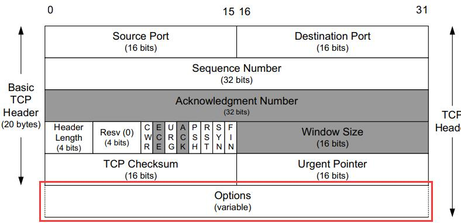
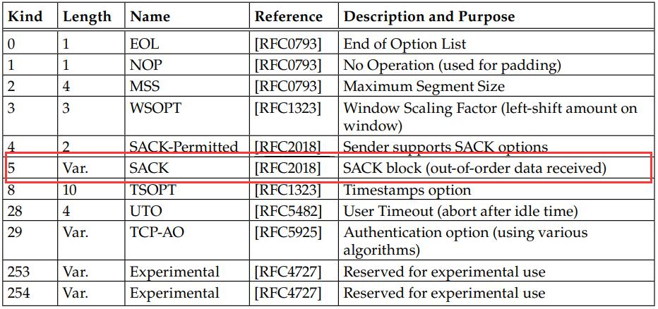
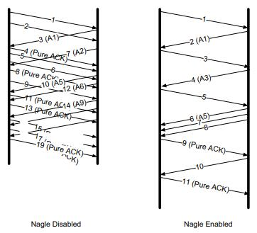
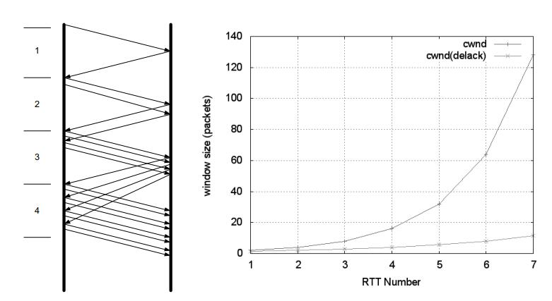

春节假期期间补充学习的内容，查缺补漏，先从TCP开始。
选择确认的重传（SACK）
TCP头部包含一个可选的选项变量，如图所示：
 其中可以用来填充以下内容：
 在数据传输过程中，因为TCP抵达的顺序是不予保证的，因此接收方必然会有收到乱序数据的情况。
在没有SACK的情况下，接收方在缺失数据时，会一直进行ACK并附带期望的SEQ，发送方在重复（duptrash常量，默认3次）收到同一个序列号时会断定有包在传输过程中丢失，然后进行重传。
如果TCP发送方能够了解接收方当前的空洞，它就能在报文段丢失或者接收方遗漏的时候更好地进行重传工作，且减少不必要的重传。在丢包严重的情况下，SACK可以在一个RTT内填补多个空缺。
ACK号与接收端缓存中的其他数据之间的间隔称为“空缺”，序列号高于“空缺”的数据称为“失序数据”。一个ACK可以包含三四个告知失序数据的SACK信息，每个SACK信息包含32位序列号，代表接收端存储的失序数据的起始至最后一个序列号。
SACK接收端
第一个SACK块内包含的时最近接收到的报文段的序列号范围，其余SACK块包含的内容也按照接收的先后顺序依次排列。也就是说，最新一个块中包含的内容除了包含最近接收的序列号信息，还需要重复之前SACK块。这样可以为防止SACK丢失提供一些备份，若SACK不会丢失，每个SACK中包含一个SACK块即可实现SACK全部功能。
SACK发送端
合理利用接收到的SACK块进行丢失重传，称为选择性重传。一种方法是当接收到相应序列号范围的ACK时，则在其重传缓存中标记该报文段的选择重传成功。
当发送端收到SACK时，可以选择发送新数据或重传旧数据。通过SACK提供的序列号范围可以推断需要重传的空缺数据。最常用、最简单的方法是使发送端首先填补接收端的空缺，然后继续发送新数据。
SACK发送端不能在收到一个SACK后立即清空其重传缓存中的数据，因为接收端告诉发送端一段SACK范围，其后可能会“食言”。只有当ACK号大于缓存序列号时才能将缓存清除。
普通的重传（Timer-based和Fast Retransmit）
基于计时器的重传
基于计时器的重传需要RTT的测量值，而这个测量值的确定算法较为复杂，后文再详细描述。
当TCP发送端拿到RTT测量值，就可以设置RTO。
发送单记录需要被计时的报文段序列号，如果收到了报文的ACK，那么计时器取消；若在设定的RTO内没有收到ACK，将会触发超时重传。发送端会降低当前数据的发送率来对此快速响应：
- 基于拥塞控制机制，减小发送窗口（cwnd）大小
- 每一个重传报文被再次重传时，增大RTO的退避因子：RTO=γRTO，其中γ初始为1，随着重传加倍增长：2、4、8等。一旦接收到ACK则重置为1。
下面再来说一下RTT的测量，RTT即round-trip time，TCP接收端在收到数据后会返回确认信息，因此可以在这个信息中携带一个字节的数据来测量传输该确认信息所需的时间。每个测量结果称为RTT样本。TCP需要根据一段时间内的样本建立好估计值，再根据估计值设置RTO。
经典方法采用如下公式计算得到平滑的RTT估计值（SRTT）：
SRTT ← α(SRTT) + (1 − α) RTTs</code></pre>
基于现存值和新的RTTs得到更新结果，常量α为平滑因子。
标准方法采用如下算式，其中M代表RTT测量值（前面称RTTs）：
tt ← (1 - g)(srtt) + (g)M
rttvar ← (1 - h)(rttvar) + (h)(|M - srtt|)
RTO = srtt + 4(rttvar)</code></pre>
快速重传
快速重传机制基于接收端的反馈信息来引发重传，更加及时有效修复丢包情况。当接收到失序报文段时，TCP需要立即生成确认信息（重复ACK）。重复ACK到达发送端表明先前发送的某个分组已经丢失，当然也可能仅是失序到达。通常我们无法区分，TCP等待一定数目（duptresh）的重复ACK后，就决定数据是否丢失并触发快速重传。
Nagle算法与延时ACK
Nagle
假设有如下场景：每次TCP的数据部分非常小，TCP头部和IP头部体积固定为40字节，那么这些小包因为有效的应用数据占比甚微，就会造成很高的网络传输代价。
John Nagle提出了一种算法，当一个TCP连接中有在传数据，则长度小于SMSS的报文段都不能发送，直到所有在传数据收到ACK。并且，在ACK后，TCP需要收集这些小的数据，将其整合到一个报文段中发送。
 在Nagle开启下，传输的包数量更少，但是长度更大，同时传输时延也更长。
延时确认
TCP并不是对每个到来的数据包都返回ACK，通常会积累一段时间发送TCP，减少ACK传输数目。对于批量数据传输通常为2:1的比例。
结合
如果直接将Nagle和延时ACK结合，接收端会尝试等待，看是否有更多的ACK可以捎带进行应答，而发送端因为Nagle的存在，在没有接收到ACK前不能进行发送，就会产生死锁。死锁在延时ACK计时器超时后就会解除，但是在死锁期间传输连接处于空闲状态，性能会变差。
某些情况下，例如ssh传输，就可以禁用Nagle算法。
拥塞控制
反映网络传输能力的变量称为拥塞窗口（congestion window），记作cwnd，通告窗口（advertisement window）记为awnd，实际发送端可用的窗口为：
W = min(cwnd, awnd)</code></pre>
因此还没有收到ACK回复的数据量（称为在外数据值）不能多于W。
然而cwnd、awnd等值需要动态调节，因此并不能准确获取。W值不能过大或过小，我们希望有一个最佳窗口大小。
获得cwnd
获得最佳值的方法是以越来越快的速度发送数据，直到出现数据丢失或网络阻塞。一般可以以awnd启动或者慢速启动，因为直接以awnd启动会影响其他连接性能，所以通常避免过快启动。
慢启动
一个新的TCP连接建立或者检测到重传超时导致的丢包时，需要执行慢启动。慢启动的目的是让TCP使用拥塞避免探寻更多带宽前得到cwnd值，以及帮助TCP建立ACK时钟。
TCP在SYN后开始慢启动，称为初始窗口（Initial Window，IW）。初始值设为一个SMSS值或稍大。假设没有出现丢包，第一个数据段的ACK到达，慢启动算法会以min(N, SMSS)来增加cwnd值。N是指在传输数据中通过这一ACK确认的字节数（不包括ACK号小于之前收到ACK号的数据）。
那么在接收到1个数据段的ACK后，cwnd就会变为2，发送2个数据段。在接收到对应的新ACK后，cwnd就会变为4，以此类推。
 然而因为ACK并不是每一次都会累积发送端一次发送的包进行ACK，例如，发送端在cwnd变为4后，发送了4个包，而接收端在接收前两个包后进行ACK（长度为2），接收到后两个包后进行ACK（长度也为2），那么此时min(N, SMSS)因为N为2个MSS，并非发出去的4个MSS，所以cwnd = cwnd + 2，而不是 cwnd = cwnd * 2的指数增长。具体见下图的两种增长曲线：
拥塞避免
通过慢启动，cwnd会快速增长，帮助建立一个慢启动阈值。一旦确定慢启动阈值，TCP会进入拥塞避免阶段，cwnd每次增长值近似于成功传输的数据段大小。更准确说，每接收一个新的ACK，cwnd会做一下更新：
nd(t+1) = cwnd(t) + SMSS * SMSS/cwnd(t)</code></pre>
通常认为，拥塞避免阶段窗口随时间线性增长，慢启动阶段呈指数增长。
当cwnd < ssthresh，使用慢启动算法；反之使用拥塞避免。
慢启动阈值在重传时按照下式改变：
thresh = max(flight size/2, 2*SMSS)</code></pre>